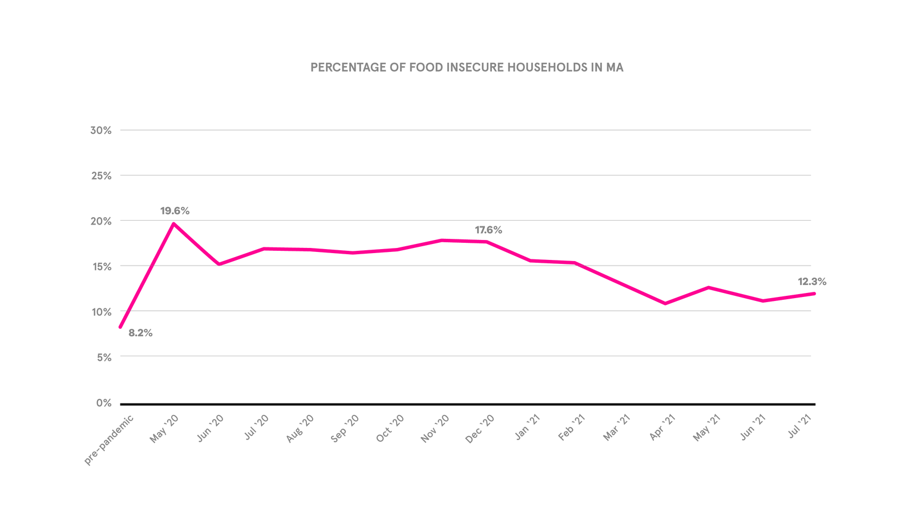
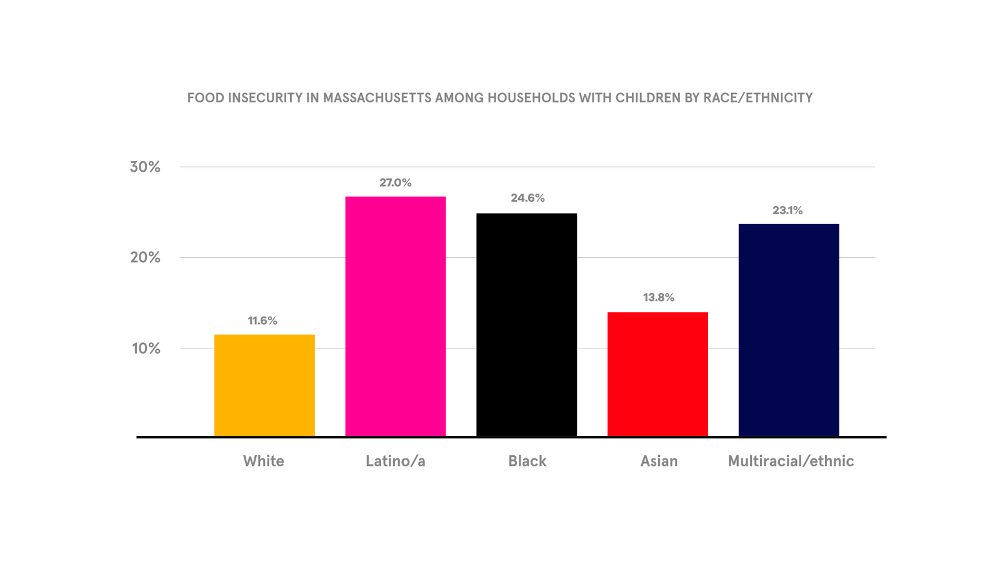

by Mary Moskowitz
Feeding America defines food insecurity as “a lack of consistent access to enough food for every person in a household to live an active, healthy life”. Food insecurity is caused by a number of social and economic factors, but can be triggered by a sudden event (such as job loss, car maintenance, etc.) and seriously impacts both adult and child health. People and families living in poverty are more likely to experience food insecurity, and other factors that put people at higher risk of insecurity are race, immigration status, and geographic location. These factors alone are not causal with food insecurity, rather it is systemic injustices and oppressions that have caused this link.
Many food insecure people live in areas without proper access to grocery stores and fresh produce, meaning they have to rely on local convenience stores and predominantly non-perishable grocery items for the bulk of their diet. According to The Food Trust, 2.8 million Massachusetts residents of low-income households lack access to grocery stores. The cities with the most significant gaps include Chelsea, Springfield, Revere, and Lynn.
Before the beginning of the COVID-19 pandemic in early 2020, Project Bread reported the household food insecurity rate to be 8.2% in Massachusetts. From 2019 to 2020, the state of Massachusetts saw a 55% increase in the number of residents facing food insecurity, according to a survey led by the Greater Boston Food Bank. According to Project Bread, food insecurity peaked in May 2020 and has trended downward since, but remains above pre-pandemic levels.

Non-white residents have historically been overrepresented in those experiencing food insecurity. Particularly, Black, Latinx, and multiracial households are nearly twice as likely to experience food insecurity as white households. The Food Bank published that “among Massachusetts residents, 58 percent of Latinx adults, 45 percent of Black adults, 26 percent of Asian adults, 24 percent of White adults and 42 percent of adults with children reported experiencing food insecurity” (GBFB). Non-white households are more likely to live in locations that lack access to fresh food, public transportation, and have children who receive breakfast and lunch through the National School Lunch Program (NSLP). These households have been hit the hardest by the pandemic in all aspects, including job loss and infection rate, due to centuries of systemic racism within healthcare, infrastructure, and the workforce.

Among the programs designed to alleviate hunger and food insecurity are the Supplemental Nutrition Assistance Program (SNAP), EBT, and HIP. In Massachusetts, the number of residents enrolling in SNAP has increased significantly. The program increased benefits amounts so that households could receive the maximum amount through June 2021. However, since Massachusetts ended the state of emergency of June 15, these expanded benefits ended at the end of the month.
From May 2019 to June 2021, SNAP enrollment went up by 27.5%. It is estimated that 1,659 new households applied for SNAP benefits in Massachusetts each day during the pandemic, giving the inspiration for our data sculpture. It is estimated that only half of people eligible for SNAP benefits enroll in them. There are several reasons for this under enrollment, including stigma and a desire for self-sufficiency. In Massachusetts, MassHealth data shows that 659,340 people fall in this gap, and a quarter of them are children.
The Pandemic-EBT program (P-EBT) was implemented in 2020 to ensure that schoolchildren who were unable to access in-school meals were able to acquire food resources. This federal program reached nearly 550,000 Massachusetts students and was extended through summer 2021, but is set to expire at the end of August.
The solution to food insecurity is not simply getting people more food. Rather, it is both a systems and interpersonal level shift towards food sovereignty that is the goal. Food sovereignty is a concept developed by Via Campesina, the International Peasants’ Movement and leader in the food justice movement. They define food sovereignty as “the peoples’, Countries’ or State Unions’ RIGHT to define their agricultural and food policy, without any dumping vis-à-vis third countries”. You can read more about the principles of food sovereignty and the work that Via Campesina does here.